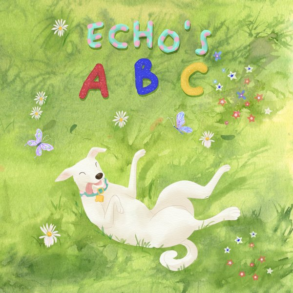

My first book: launching Echo’s ABC
I thought hitting “publish” would be the finish line. It turned out to be the starting line.
The story so far · Part 1 of 5
Echo’s ABC is my first published book. It’s an alphabet book about our dog Echo, a Jindo rescued from Korea, and it started the way a lot of good things in our house start: with my family. Danny and Peyton helped shape it from the very beginning.

Finding the right artist
I knew from day one that the art had to be made by a real person. I found Esther Rai, and she brought Echo to life page by page. Every illustration in the book is hand-made, and I wouldn’t have it any other way. (I wrote more about that in finding the right artist.)
The things nobody tells you
Writing the book turned out to be the easy part. Publishing it came with a pile of decisions I didn’t know existed:
- Trim size. The art is square, 8.5 by 8.5 inches. That sounds simple until you learn that not every format offers a square page.
- Hardcover. I wanted one badly. Amazon’s color hardcovers need at least 75 pages and don’t come in a square size, and my book is 36 pages. So I launched in paperback and Kindle first, then found a home for the hardcover with Barnes & Noble Press.
- Getting seen. Publishing a book doesn’t mean anyone finds it. I tried small Amazon ad campaigns in the US and the UK, watched what happened, and adjusted. I’m still learning.
Learning to network
After years in medicine and teaching, reaching out to people about my own book felt completely new. I was nervous about every message. And then people started writing back.
My first story time was at Wildlings Play Place in Oregon City in October. Since then I’ve been talking with bookstores, swim schools and local businesses about reading events, and connecting with read-aloud creators, teachers, librarians and other children’s book authors. Every conversation has led to another one.
What’s next
Echo’s second book, Echo Goes to the Vet, is out now, and I wrote about what it took to write it in rhyme. If you’d like Echo’s ABC at your story time, classroom or shop, email me at hello@waypointink.com, or find it on Amazon.